第 10 章微分的几何意义
思考导数具有怎样的几何意义是有益的。
首先，任何关于 \(x\) 的函数，例如 \(x^2\)、\(\sqrt{x}\) 或 \(ax+b\)，都可以绘制成曲线。如今，每个学生都熟悉绘制曲线的过程。
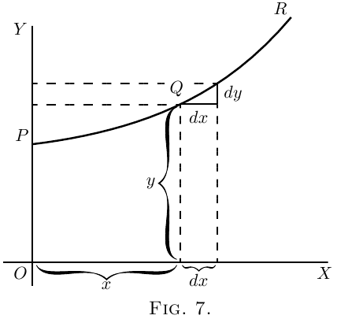
设 图7 中的 \(PQR\) 是一个关于坐标轴 \(OX\) 和 \(OY\) 的曲线的一部分。考虑曲线上任意一点 \(Q\)，该点的横坐标为 \(x\)，纵坐标为 \(y\)。现在观察当 \(x\) 发生变化时，\(y\) 的变化情况。如果将 \(x\) 向右增加一个小增量 \(dx\)，可以观察到 \(y\) 也会增加一个小增量 \(dy\)（因为这条曲线是上升的曲线）。此时，增量比 \(\dfrac{dy}{dx}\) 测量了曲线在两点 \(Q\) 和 \(T\) 之间的斜率。然而，由于曲线 \(Q\) 和 \(T\) 之间存在多种不同斜率，因此我们不能简单地定义“曲线在 \(Q\) 和 \(T\) 之间的斜率”。但如果点 \(Q\) 和 \(T\) 非常接近，以至于曲线 \(QT\) 的小段几乎呈直线，那么可以认为 \(\dfrac{dy}{dx}\) 是曲线在 \(QT\) 段的斜率。延长这段小直线 \(QT\)，它只会触及曲线的 \(QT\) 部分。如果 \(QT\) 无限短，则直线几乎只会在一点上与曲线相切，因此称该直线为曲线在该点的切线。
显然，这条切线与 \(QT\) 具有相同的斜率，因此 \(\dfrac{dy}{dx}\) 就是曲线在点 \(Q\) 处切线的斜率。
“曲线的斜率”这种简短的说法本身意义不明确，因为曲线有无数斜率——每一小段曲线都有不同的斜率。然而，“曲线在某点的斜率”是一个精确定义的概念，它表示曲线在该点附近的一小段的斜率，或者说是“曲线在该点的切线的斜率”。
注意，\(dx\) 是向右的一个小步，\(dy\) 是相应向上的一个小步。必这些步长应尽可能小，甚至可以视为无限小。然而，在图中，我们必须将它们绘制得大一点以便可见。
我们将在后续中频繁使用这一事实：\(\dfrac{dy}{dx}\) 表示曲线在任意一点的斜率。
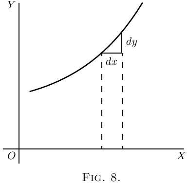
如果曲线在某点以 \(45°\) 的角度上升（见 图 8），则 \(dy\) 和 \(dx\) 相等，\(\dfrac{dy}{dx} = 1\) 。
如果曲线以比 \(45°\)(更陡的角度上升（见图9），则 \(\dfrac{dy}{dx}\) 将大于 \(1\)。
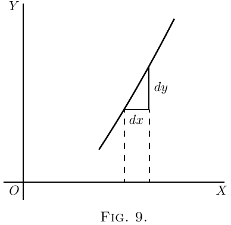
如果曲线以非常平缓的角度上升（见图10），则 \(\dfrac{dy}{dx}\) 小于 \(1\)。
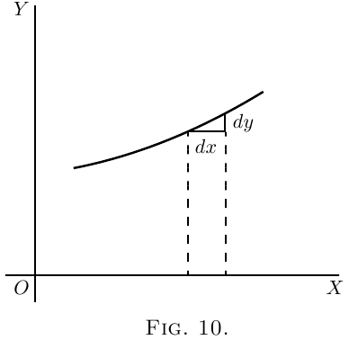
如果曲线水平（即曲线中有水平段），\(dy=0\)，则 \(\dfrac{dy}{dx}=0\)!
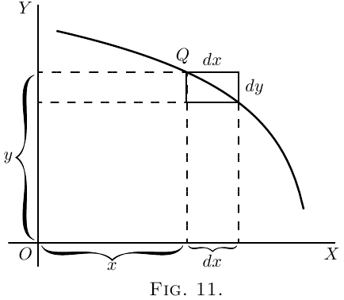
如果曲线向下倾斜（见图11），\(dy\) 为负值，因此 \(\dfrac{dy}{dx}\) 也为负。
如果“曲线”是一条直线，如 图 12 所示，则 \(\dfrac{dy}{dx}\) 的值在直线上每一点都相同。换句话说，这条直线的斜率是恒定的。
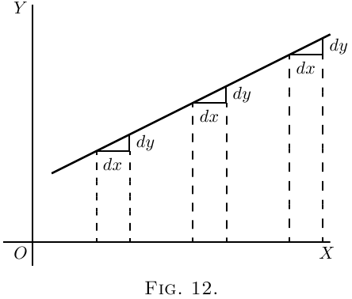
如果一条曲线在向右延伸时变得越来越陡，则 \(\dfrac{dy}{dx}\) 的值会随着陡度的增加而变大，如图13所示。
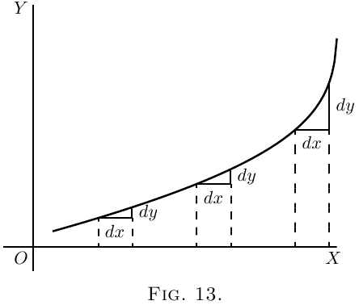
如果一条曲线在向右延伸时变得越来越平缓，则 \(\dfrac{dy}{dx}\) 的值会随着平缓程度的增加而减小，如图14所示。
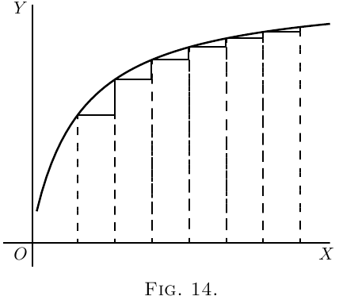
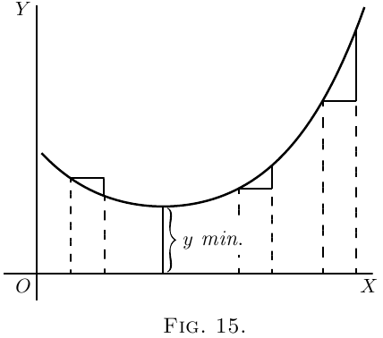
如果一条曲线先下降然后再次上升，如 图 15 所示，呈现出向上的凹形，那么很明显 \(\dfrac{dy}{dx}\) 的值会首先为负，并随着曲线变平缓而逐渐减小；当曲线的底部点达到最低点时，\(\dfrac{dy}{dx}\) 的值为零；从这个点开始，\(\dfrac{dy}{dx}\) 的值会变为正数，并随着曲线变得陡峭而增加。在这种情况下，\(y\) 被称为经过了一个最小值。\(y\) 的最小值不一定是其可能取得的最小数值，而是与曲线底部位置对应的 \(y\) 值。例如，在图28中，曲线底部的 \(y\) 值为 \(1\)，而曲线其他地方的 \(y\) 值可能更小。最小值的特点是，\(y\) 在其两侧都必须增加。
注意——当 \(x\) 取某个值使 \(y\) 取得最小值时，\(\dfrac{dy}{dx} = 0\)。
如果一条曲线先上升然后下降，如 图16所示，\(\dfrac{dy}{dx}\) 的值在开始时为正；当曲线到达最高点时，\(\dfrac{dy}{dx}=0\)；然后随着曲线向下倾斜，\(\dfrac{dy}{dx}\) 的值变为负数。在这种情况下，\(y\) 被称为经过了一个最大值，但 \(y\) 的最大值不一定是其可能取得的最大数值。例如，在图 28中，\(y\) 的最大值是 \(2\frac{1}{3}\)，但这不一定是曲线其他部分中 \(y\) 能取得的最大值。
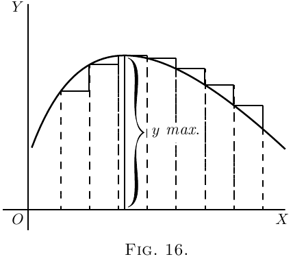
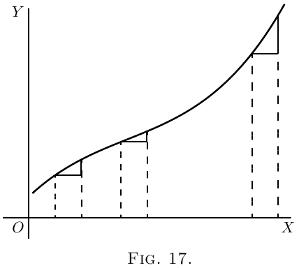
注意——当 \(x\) 取某个值使 \(y\) 取得最大值时，\(\dfrac{dy}{dx}= 0\)。
如果一条曲线具有如 图 17 所示的特殊形状，则 \(\dfrac{dy}{dx}\) 的值始终为正，但在某个特定位置，曲线的斜率最小，此时 \(\dfrac{dy}{dx}\) 取最小值，这意味着该值小于曲线其他部分的斜率值。
如果一条曲线具有如 图 18 所示的形状，则 \(\dfrac{dy}{dx}\) 在曲线顶部为负值，在曲线底部为正值；而在曲线的“鼻子”位置（曲线变得完全垂直的地方），\(\dfrac{dy}{dx}\) 的值将趋于无穷大。
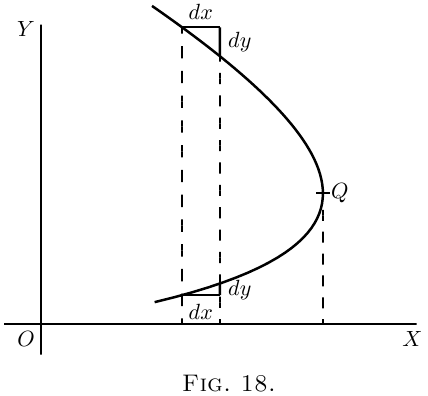
现在我们理解了 \(\dfrac{dy}{dx}\) 衡量曲线在任意点的陡峭程度，让我们看看一些已经学习过的微分方程：
(1) 作为最简单的例子，取：
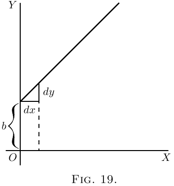
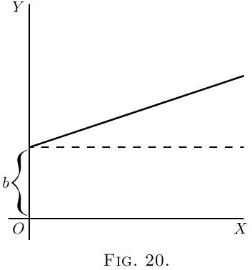
用相同的比例尺绘制 \(x\) 和 \(y\) 的图像，如图19所示。如果我们取 \(x = 0\)，则对应的纵坐标为 \(y = b\)，也就是说，“曲线”在 \(y\) 轴上高度为 \(b\) 的位置与轴相交。从此点开始，每增加一个单位的 \(x\)，\(y\) 都增加一个单位，形成 \(45°\) 的上升角。直线的坡度为 \(1\)。
现在，通过我们已经学到的规则对 \(y = x + b\) 进行微分，得到 \(\dfrac{dy}{dx} = 1\)。
这条直线的斜率表示每向右一个小步 \(dx\)，就向上一个小步 \(dy\) \(dy\)。这个斜率是恒定的。
(2) 再来看一个例子：
我们知道，这条曲线（与前例类似）将在 \(y\) 轴上的高度 \(b\) 处起点。但在绘制曲线之前，让我们先通过微分找到其斜率：\(\dfrac{dy}{dx} = a\)。斜率是恒定的，以一个角度上升，这个角度的正切值就是 \(a\)。假设 \(a\) 是一个具体值，比如 \(\frac{1}{3}\) 。那么曲线的斜率表示每上升 \(1\) 个单位水平距离需要 \(3\) 个单位，也就是 \(dx\) 是 \(dy\) 的 \(3\) 倍。如图21所示。在图20中按照这个斜率绘制出曲线。
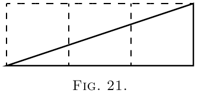
(3) 现在来看一个稍微复杂一点的例子：\(y= ax^2 + b\)。
同样，这条曲线在 \(y\) 轴上的起点是高于原点 \(b\) 的位置。
现在进行微分：(如果你忘记了规则，可以回到参见第5章,不过更好的方法是思考这个微分过程。)
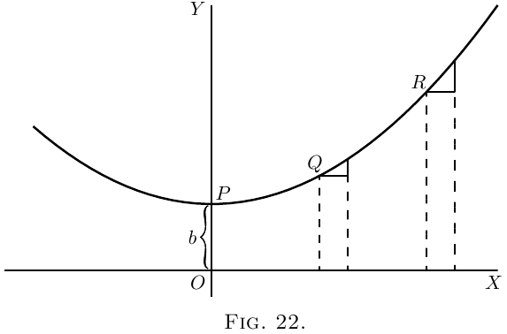
这表明曲线的陡峭程度并不是恒定的：它随着 \(x\) 的增大而增大。在起点 \(P\)（\(x=0\)）处，图22所示的曲线没有陡峭程度——也就是说，它在这一点是水平的。在原点左侧，当 \(x\) 是负值时，\(\dfrac{dy}{dx}\) 也会是负值，表明曲线从左向右下降，如图所示。
让我们通过一个特定的例子来说明这一点。取以下方程：
对其求导，得到：
现在给 \(x\) 赋一些连续值，比如从 \(0\) 到 \(5\)，然后通过第一个方程计算相应的 \(y\) 值，再通过第二个方程计算 \(\dfrac{dy}{dx}\) 的值 。将结果制成表格如下：
| \(x\) | \(0\) | \(1\) | \(2\) | \(3\) | \(4\) | \(5\) |
|---|---|---|---|---|---|---|
| \(y\) | \(3\) | \(3\frac{1}{4}\) | \(4\) | \(5\frac{1}{4}\) | \(7\) | \(9\frac{1}{4}\) |
| \(d\) | \(0\) | \(\frac{1}{2}\) | \(1\) | \(1\frac{1}{2}\) | \(2\) | \(2\frac{1}{2}\) |
然后将它们绘制为两条曲线：图 23 中是 \(y\) 对 \(x\) 的图；图 24 中是 \(\dfrac{dy}{dx}\) 对 \(x\) 的图。对于任何指定的 \(x\) 值，第二条曲线中纵坐标的高度与第一条曲线的斜率成比例。
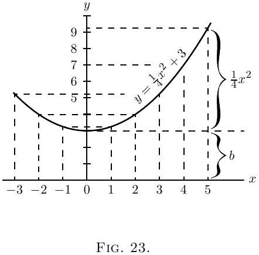
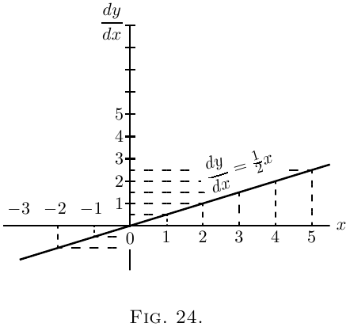
如果一条曲线在某点形成突然的尖点，如图25所示，则在该点的斜率会从向上突然变为向下。在这种情况下，\(\dfrac{dy}{dx}\) 显然会从正值突然变为负值。
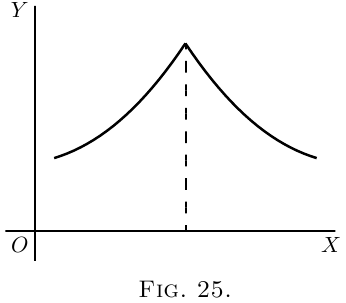
以下例子展示了刚才所讲原则的进一步应用。
(4) 求以下曲线在点 \(x = -1\) 处的切线斜率。
计算该切线与曲线 \(y = 2x^2 + 2\) 所成的角度。
切线的斜率等于曲线在两者相交点处的斜率，即曲线在该点的 \(\dfrac{dy}{dx}\)。此处的导数为：\(\dfrac{dy}{dx} = -\dfrac{1}{2x^2}\)，当 \(x = -1\) 时，\(\dfrac{dy}{dx} = -\dfrac{1}{2}\)，这是曲线和切线在该点的斜率。切线是一条直线，其方程为 \(y = ax + b\)，其斜率 \(\dfrac{dy}{dx} = a\)，因此 \(a = -\dfrac{1}{2}\)。此外，当 \(x= -1\) 时，\(y = \dfrac{1}{2(-1)} + 3 = 2\frac{1}{2}\)。由于切线通过该点，点的坐标必须满足切线方程，即：
代入 \(x = -1\) 和 \(y = 2\frac{1}{2}\)，得到 \(2\frac{1}{2} = -\dfrac{1}{2}(-1) + b\)，解得 \(b = 2\)。因此切线方程为：\(y = -\dfrac{1}{2} x + 2\)。
当两条曲线相交时，其交点是两条曲线的共同点，其坐标必须同时满足两条曲线的方程。这里，曲线的交点由以下联立方程的解给出：
化简后得：
这个方程的解为 \(x = 0\) 和 \(x = -\tfrac{1}{4}\)。曲线 \(y = 2x^2 + 2\) 在任意点的斜率为：
当 \(x = 0\) 时, 斜率为0，曲线在此处水平。对于点
因此曲线在该点向右下方倾斜，与水平线成 \(45°\) 的角度，即 \(\tan \theta = 1\)。
直线的斜率为 \(-\tfrac{1}{2}\);，即它向右下方倾斜，与水平线的夹角 \(\phi\) 满足 \(\tan \phi = \tfrac{1}{2}\)，即角度为 \(26° 34'\)。因此，在第一个交点处，曲线与直线的夹角为 \(26° 34'\)，而在第二个交点处，夹角为 \(45° - 26° 34' = 18° 26'\)。
(5) 画一条直线，该直线通过点 \(x = 2\)，\(y = -1\) 并与曲线 \(y = x^2 - 5x + 6\) 相切。求切点的坐标。
切线的斜率必须等于曲线的 \(\dfrac{dy}{dx}\)，即 \(2x - 5\)。
直线的方程式为 \(y = ax + b\)，代入 \(x = 2\)，\(y = -1\)，有 \(-1 = a×2 + b\)，同时，直线的斜率 \(\dfrac{dy}{dx} = a = 2x - 5\)。
切点 \(x\) 和 \(y\) 的坐标也必须满足曲线方程和切线方程。
联立方程得到由 \(a\)、\(b\)、\(x\)、\(y\) 构成的四个方程：
从（i）和（ii）得 \(x^2 - 5x + 6 = ax+b\)。
将 \(a\) 和 \(b\) 的值代入，化简得：
化简为：\(x^2 - 4x + 3 = 0\)，解得：\(x = 3\) 和 \(x = 1\)。代入(i)，分别得到 \(y = 0\) 和 \(y = 2\)。因此，两个切点分别为 \(x = 1\)，\(y = 2\) 和 \(x = 3\)，\(y = 0\)。
注： 在所有涉及曲线的习题中，通过实际绘制曲线来验证推导结果，是极具意义的。